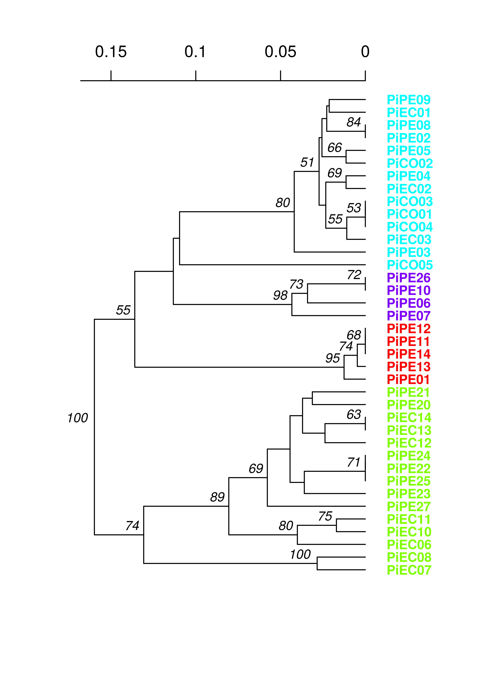

9: Population structure: \(G_{ST}\), clustering and minimum spanning networks
## Warning: package 'knitcitations' was built under R version 3.1.2## Warning: package 'knitr' was built under R version 3.1.2In this chapter we explore various ways of assessing if population are structured (e.g., differentiated). You can think of population structure as identifying clusters or groups of more closely related individuals resulting from reduced gene flow among these groups. Populations can be studied to determine if they are structured by using for example population differentiation \(G_{ST}\), clustering, or graphing of minimum spanning networks (MSN). Let’s first look at an example of population differentiation.
\(G_{ST}\) an example with Felis catus data.
Assessing genetic diversity almost always starts with an analysis of a parameter such as \(G_{ST}\). There are lengthy debates as to what measure of differentiation is better (Meirmans & Hedrick, 2011). Instead of going into that lengthy debate, it would be more worthwhile to point you into the direction of a package dedicated to Modern Methods of Differentiation called mmod. We will use the data set nancycats containing 17 colonies of cats collected from Nancy, France. As cats tend to stay within small groups, we expect to see some population differentiation. In terms of these diversity measures, an index of 0 indicates no differentiation, whereas 1 indicates that populations are segregating for differing alleles.
Let’s load the package and the example data set.
if (!require("mmod")){
install.packages("mmod", repos = "http://cran.at.r-project.org")
require("mmod")
}
data(nancycats)
nancycats##
## #####################
## ### Genind object ###
## #####################
## - genotypes of individuals -
##
## S4 class: genind
## @call: genind(tab = truenames(nancycats)$tab, pop = truenames(nancycats)$pop)
##
## @tab: 237 x 108 matrix of genotypes
##
## @ind.names: vector of 237 individual names
## @loc.names: vector of 9 locus names
## @loc.nall: number of alleles per locus
## @loc.fac: locus factor for the 108 columns of @tab
## @all.names: list of 9 components yielding allele names for each locus
## @ploidy: 2
## @type: codom
##
## Optional contents:
## @pop: factor giving the population of each individual
## @pop.names: factor giving the population of each individual
##
## @other: a list containing: xyNow we will use Hendrick’s standardized \(G_{ST}\) to assess population structure among these populations (Hedrick, 2005).
Gst_Hedrick(nancycats)## $per.locus
## fca8 fca23 fca43 fca45 fca77 fca78
## 0.47504450 0.29566884 0.26757664 -0.05705814 0.48558285 0.19333266
## fca90 fca96 fca37
## 0.38075783 0.39139242 0.16095760
##
## $global
## [1] 0.2820551What does this output tell us?
Minimum spanning network
For this section, we will use the monpop data set from (Everhart & Scherm, 2014). see Chapter 6 for more details. We will be focusing on sources of multilocus genotypes. The life cycle of the pathogen Monilinia fructicola begins with an ascospore (sexual propagule) released from a mummified peach fruit that had overwintered on the ground. It infects an emerging blossom that, in turn, asexually infects fruit, which proceed with cyclical infections. We might have questions such as:
- Are the major genotypes of Fruit Rot (FR) samples closely related?
- To what degree do the Blossom Blight (BB) samples contribute to the FR?
Let’s load the data:
library("poppr")
data(monpop)
splithierarchy(monpop) <- ~Tree/Year/Symptom
summary(monpop)##
## # Total number of genotypes: 694
##
## # Population sample sizes:
## 7_09_BB 26_09_BB 26_09_FR 7_09_FR 26_10_BB 45_10_BB 79_10_BB 79_10_FR
## 23 41 132 73 5 13 1 64
## 26_10_FR 45_10_FR 26_11_BB 26_11_FR
## 85 130 30 97
##
## # Number of alleles per locus:
## L01 L02 L03 L04 L05 L06 L07 L08 L09 L10 L11 L12 L13
## 3 6 3 11 9 5 8 7 5 9 8 11 10
##
## # Number of alleles per population:
## 01 02 03 04 05 06 07 08 09 10 11 12
## 48 53 58 48 37 40 13 44 60 64 60 63
##
## # Percentage of missing data:
## [1] 0.5098648
##
## # Observed heterozygosity:
## [1] 0
##
## # Expected heterozygosity:
## [1] 0We notice that tree number 26 is the only one to have been sampled for all three years. Let’s use it as an example.
setpop(monpop) <- ~Tree
t26 <- popsub(monpop, "26")
setpop(t26) <- ~Year/Symptom
t26##
## This is a genclone object
## -------------------------
## Genotype information:
##
## 155 multilocus genotypes
## 390 haploid individuals
## 13 codominant loci
##
## Population information:
##
## 3 hierarchical levels - Tree Year Symptom
## 6 populations defined - 9_BB 9_FR 10_BB 10_FR 11_BB 11_FRNow that we have our tree, let’s calculate a MSN using Bruvo’s distance (Bruvo et al., 2004). Remember that this distance is based on a stepwise mutation model, so we have to first specify what kind of repeats units we have in our data (eg. dinucleotide = 2, trinucleotide = 3, etc.):
# Set up our repeat lengths and populations to analyze
reps <- c(6, 2, 4, 4, 4, 4, 4, 3, 4, 4, 2, 2, 2)
sub9 <- c("9_BB", "9_FR")
# Calculate the MSN
t26.9msn <- bruvo.msn(t26, replen = reps, sublist = sub9, showplot = FALSE)The minimum spanning network is calculated via bruvo.msn. I’ve set the argument showplot = FALSE because I want to use the more powerful function plot_poppr_msn to view the MSN. In this, I’m telling it to lable none of the samples, color populations using the “cm.colors” palette and scale the size of the nodes to \(log_{1.25}\). If you want to know what other things this function can do, simply type help("plot_poppr_msn")
# Visualize
set.seed(9001)
plot_poppr_msn(t26, t26.9msn, inds = "none", palette = cm.colors, nodebase = 1.25)
We can see that the Blossom Blight in the tree (pink pie pieces) heavily contributed to the major groups of MLGs found in the Fruit Rot (blue pie pieces).
Try it! See if you can produce similar graphs with the 2010 and 2011 populations.
K-means hierarchical clustering
A recent study reported that the origin of the potato late blight pathogen Phytophthora infestans lies in Mexico as opposed to South America (Goss et al., 2014). We saw in the previous chapter that South American populations showed signatures of clonal reproduction while Mexican populations showed no evidence rejecting the null hypothesis of random mating. In this section, we will use K-means clustering in combination with bootstrapped dendrograms to see how well this pattern holds up. Clonal populations should have short terminal branch lengths and should cluster according to those branches. Panmictic populations will show no clear pattern. Let’s look at the data:
data(Pinf)
Pinf##
## This is a genclone object
## -------------------------
## Genotype information:
##
## 72 multilocus genotypes
## 86 tetraploid individuals
## 11 codominant loci
##
## Population information:
##
## 2 hierarchical levels - Continent Country
## 2 populations defined - South America North AmericaFirst, we will perform a cluster analysis:
MX <- popsub(Pinf, "North America")
MXclust <- find.clusters(MX)
## Choose the number PCs to retain (>=1):> 50PC stands for principal component, are unitless transofrmations of your data that explaining the variance observed. For the purposes of find.clusters, we can keep as many as we want.

## Choose the number PCs to retain (>=2:> 3BIC stands for “Bayesian Information Criterion”. The lower the BIC value, the better. On the x axis are the number of clusters. We see that there is a bend at 3 clusters, indicating that the data clusters optimally into three groups.
And now we can see the cluster assignments:
MXclust## $Kstat
## NULL
##
## $stat
## NULL
##
## $grp
## PiMX01 PiMX02 PiMX03 PiMX04 PiMX05 PiMX06 PiMX07 PiMX10 PiMX11
## 1 1 2 3 3 3 3 2 2
## PiMX12 PiMX13 PiMX14 PiMX15 PiMX16 PiMX17 PiMX18 PiMX19 PiMX20
## 3 2 2 1 2 1 3 3 3
## PiMX21 PiMX22 PiMX23 PiMX24 PiMX25 PiMX26 PiMX27 PiMX28 PiMX29
## 1 2 1 2 3 1 2 2 3
## PiMX30 PiMX40 PiMX41 PiMX42 PiMX43 PiMX44 PiMX45 PiMX46 PiMX47
## 2 2 1 1 1 1 1 1 1
## PiMX48 PiMX49 PiMX50 PiMXT01 PiMXT02 PiMXT03 PiMXT04 PiMXT05 PiMXT06
## 2 2 2 1 1 3 3 1 3
## PiMXT07 PiMXt48 PiMXt68
## 3 3 3
## Levels: 1 2 3
##
## $size
## [1] 17 15 16We will go through the same procedure for the South American population.
SA <- popsub(Pinf, "South America")
SAclust <- find.clusters(SA)
## Choose the number PCs to retain (>=1):> 30
## Choose the number PCs to retain (>=2):> 4Notice here that there is no uptick in the curve. This indicates that there might not be enough information in the data set to properly cluster. We will go ahead by choosing the highest number of clusters:
Trees
Now we will build trees. We are using Bruvo’s distance since polyploids bias calculation of other distances:
pinfreps <- c(2, 2, 6, 2, 2, 2, 2, 2, 3, 3, 2)
MXtree <- bruvo.boot(MX, replen = pinfreps, cutoff = 50, quiet = TRUE)
SAtree <- bruvo.boot(SA, replen = pinfreps, cutoff = 50, quiet = TRUE)
We see very long terminal branches in the MX tree. Let’s see how the groups we found with the clustering algorithm match up:
library("ape")
cols <- rainbow(4)
plot.phylo(MXtree, cex = 0.8, font = 2, adj = 0, tip.color = cols[MXclust$grp],
label.offset = 0.0125)
nodelabels(MXtree$node.label, adj = c(1.3, -0.5), frame = "n", cex = 0.8,
font = 3, xpd = TRUE)
axisPhylo(3)
You can see that the assigned clusters don’t necessarily group with the dendrogram clusters. Let’s see what happens when we view this with the South American population:
plot.phylo(SAtree, cex = 0.8, font = 2, adj = 0, tip.color = cols[SAclust$grp],
label.offset = 0.0125)
nodelabels(SAtree$node.label, adj = c(1.3, -0.5), frame = "n", cex = 0.8,
font = 3, xpd = TRUE)
axisPhylo(3)
Everything clusters together nicely, further supporting a non-panmictic population.
Other methods
Not all methods of clustering need to be based on Bruvos’s distance. There are others available. See ?nei.dist for more details. The function aboot will perform bootstrap analysis on any distance given for individuals or populations, and poppr.msn will create minimum spanning networks given a genind object and a distance.
References
Bruvo R., Michiels N., D’Souza T., Schulenburg H. 2004. A simple method for the calculation of microsatellite genotype distances irrespective of ploidy level. Molecular Ecology 13:2101–2106. Available at: http://dx.doi.org/10.1111/j.1365-294X.2004.02209.x
Everhart S., Scherm H. 2014. Fine-scale genetic structure of Monilinia fructicola during brown rot epidemics within individual peach tree canopies. Phytopathology ##:submitted.
Goss E., Tabima J., Cooke D., Restrepo S., Fry W., Forbes G., Fieland V., Cardenas M., Grünwald N. 2014. The irish potato famine pathogen Phytophthora infestans originated in central mexico rather than the andes. Proceedings of the National Academy of Sciences 111:8791–8796. Available at: http://www.pnas.org/content/early/2014/05/29/1401884111.abstract
Hedrick P. 2005. A standardized genetic differentiation measure. Evolution 59:1633–1638. Available at: http://onlinelibrary.wiley.com/doi/10.1111/j.0014-3820.2005.tb01814.x/abstract
Meirmans P., Hedrick P. 2011. Assessing population structure: \(F_{ST}\) and related measures. Molecular Ecology Resources 11:5–18. Available at: http://onlinelibrary.wiley.com/doi/10.1111/j.1755-0998.2010.02927.x/full